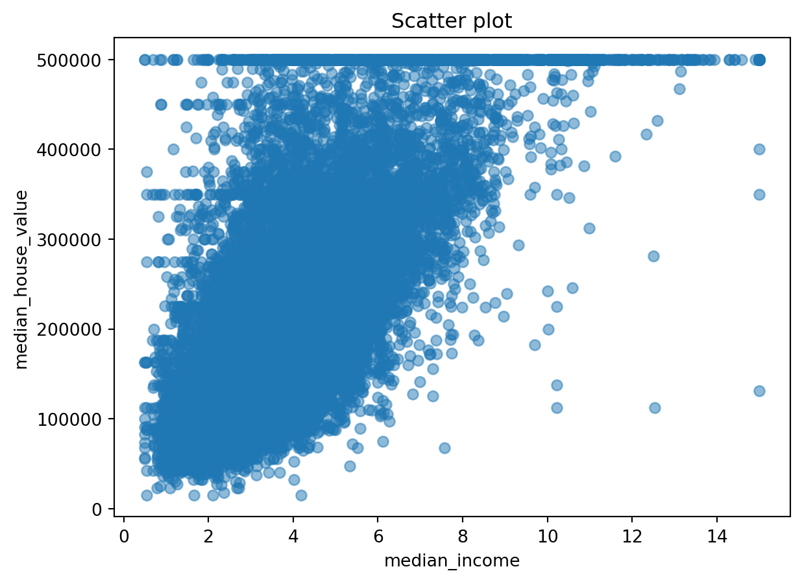
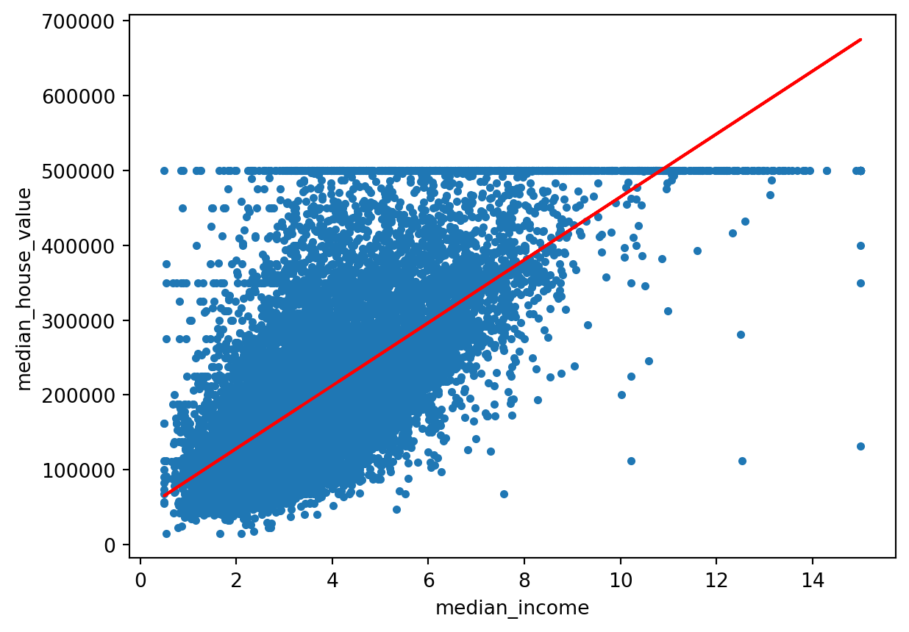
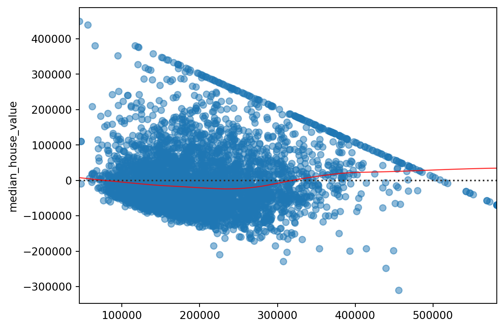

In this blog post, we’ll walk through housing data and apply regression models to predict median house values. Nonlinear regression is a statistical method used to model the relationship between variables through nonlinear functions, allowing for more flexible and complex representations than linear regression. It involves estimating parameters that minimize the difference between observed and predicted values, often requiring optimization techniques.
The Dataset
Our dataset contains 20640 observations and 9 features and 1 target variable(median_house_value). Let’s load the dataset.
import numpy as npimport pandas as pdimport matplotlib.pyplot as pltimport seaborn as snsimport warningswarnings.filterwarnings("ignore")%matplotlib inlinedata = pd.read_csv("housing.csv")data.head()
To gain insights into the dataset, lets preprocess the data by dropping unnecessary columns and create a scatter plot to visualize the relationship between median income and median house value.
data = data.drop(["housing_median_age","households","total_bedrooms","longitude","latitude","total_rooms","population","ocean_proximity"], axis=1)data.head()
median_income
median_house_value
0
8.3252
452600.0
1
8.3014
358500.0
2
7.2574
352100.0
3
5.6431
341300.0
4
3.8462
342200.0
X = data.drop("median_house_value", axis=1)y = data["median_house_value"]
plt.scatter(X, y, alpha=0.5)plt.title('Scatter plot')plt.xlabel('median_income')plt.ylabel('median_house_value')plt.show()

Using this scatter plot we can infer that if a person has higher median_income then that person may have more expensive house. There is somewhat positive linear relationship between them.
Split the data
from sklearn.model_selection import train_test_splitX_train, X_test, y_train, y_test = train_test_split(X, y, test_size =0.2, random_state =0)
ML Models
1.Linear Regression
Now, it’s time to build our linear regression model. We’ll split the data into training and testing sets, create the model, and fit it to the training data.
from sklearn.linear_model import LinearRegressionfrom sklearn.metrics import mean_squared_error, r2_score# Model initializationregression_model = LinearRegression()# Fit the data(train the model)regression_model.fit(X_train, y_train)
LinearRegression()
In a Jupyter environment, please rerun this cell to show the HTML representation or trust the notebook. On GitHub, the HTML representation is unable to render, please try loading this page with nbviewer.org.
# data pointsplt.scatter(X_train, y_train, s=10)plt.xlabel('median_income')plt.ylabel('median_house_value')# predicted valuesplt.plot(X_test, y_predicted, color='r')plt.show()

Residual plot from linear regression
# Assuming y_predicted and y_test are defined and are numpy arrays or similar data structures that support arithmetic operationsresidual = y_test - y_predicted
The obtained R2 score is 0.4385 which is worse than the previous model.
Residual plot for transformed
# Assuming y_predicted and y_test are defined and are numpy arrays or similar data structures that support arithmetic operationsresidual = y_test - y_predicted
Residual plot for the transformed linear regression is more zigzag than the simple linear regression. This residual plot suggest that transformation makes the relationship more non- linear in nature.
Model 3:
We will now attempt a polynomial regression model.
In a Jupyter environment, please rerun this cell to show the HTML representation or trust the notebook. On GitHub, the HTML representation is unable to render, please try loading this page with nbviewer.org.
We end up with a R2 of 0.449, which is our best score yet. now we run:
# Assuming y_predicted and y_test are defined and are numpy arrays or similar data structures that support arithmetic operationsresidual = y_test - y_predicted# Corrected call to residplotsns.residplot(x=y_predicted, y=residual, lowess=True, scatter_kws={'alpha': 0.5}, line_kws={'color': 'red', 'lw': 1, 'alpha': 0.8})plt.show()

Conclusion
Model 3 has the best R2 score but it is also far more complex than model 1. This trade off must be considered while selecting a suitable model.